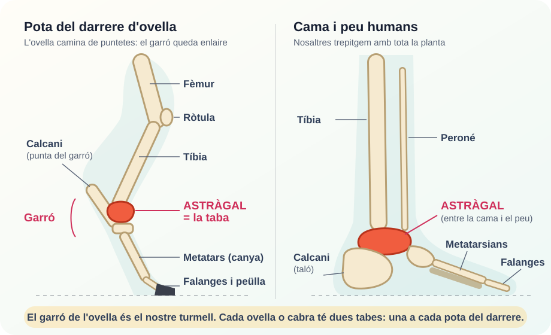
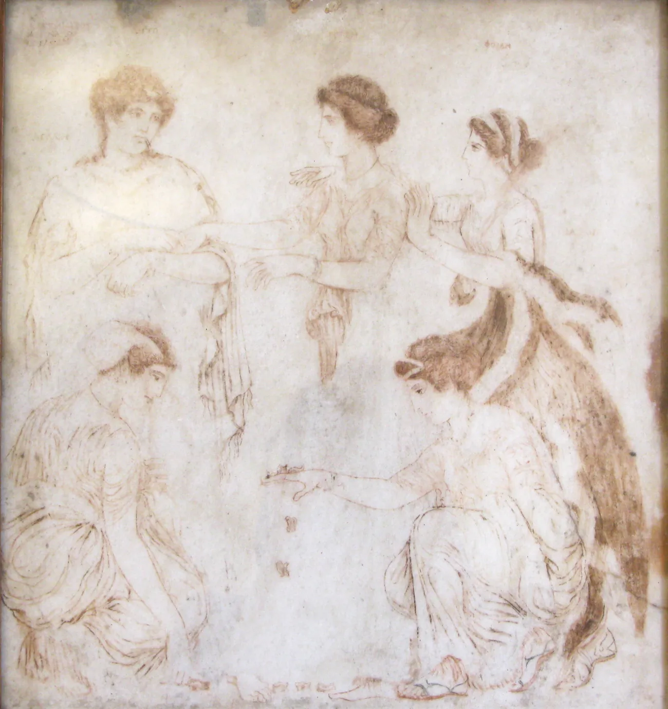
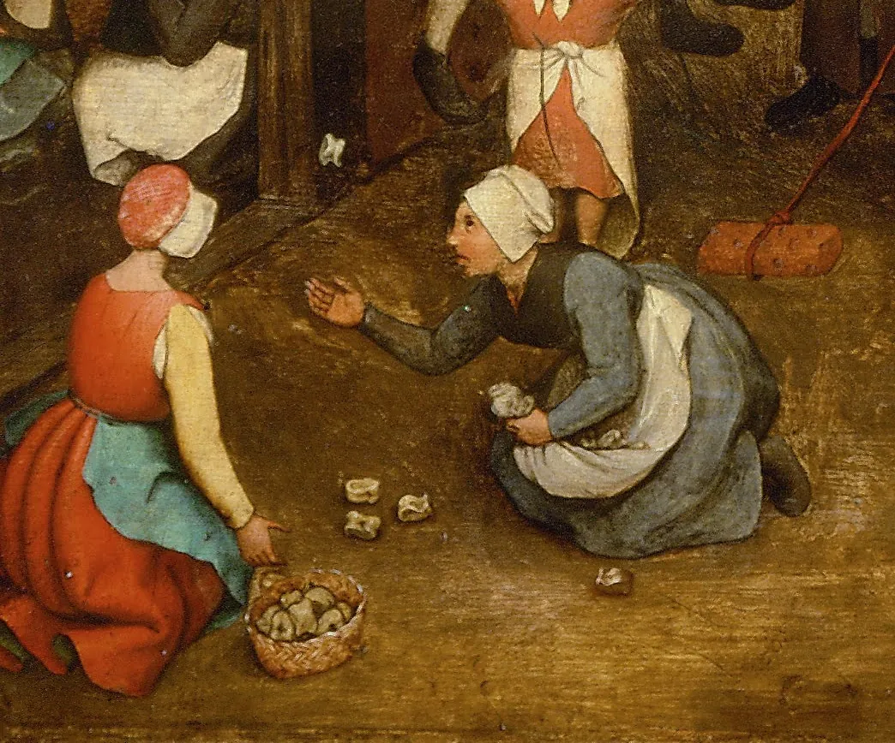
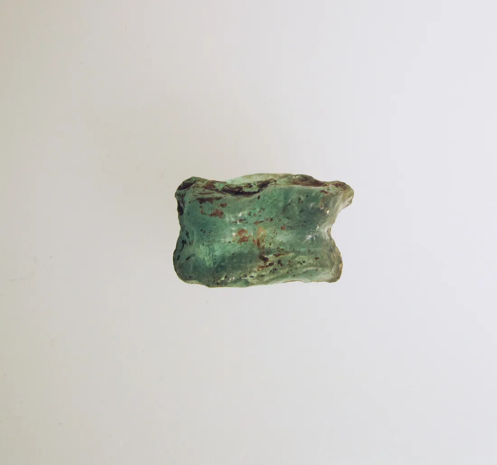

La taba és l’astràgal de l’ovella o de la cabra (també del xai o del cabrit): un osset del garró que, quan cau, queda aturat sobre una de les seves quatre cares. Per això pot fer de peça d’habilitat, de dau irregular o d’objecte simbòlic.
L’objecte
Les quatre cares de la taba
Una taba té sis costats, però només en quatre s’hi pot aturar quan cau: dues cares amples (la panxa i el forat) i dues cares estretes (el rei i el botxí). Tria una cara per veure com és, com es diu i quin paper té en cada joc.
Panxa
Cara ampla i convexa: la que sobresurt, com una panxa plena.
Altres noms
panxeta, carn, panxa plena, panxa de bisbe
Rei i botxí
Lliure: qui la treu se salva de la prova.
Probabilitat aproximada
35-40 %
Punts a Roma
4
Al shagai mongol
Ovella (favorable)
Forat de l’aigüera
Cara ampla i còncava: la que fa un clot, oposada a la panxa.
Altres noms
clotet, panxa buida, olla, infern, ull, cul
Rei i botxí
Culpable: qui la treu ha de complir la prova.
Probabilitat aproximada
35-40 %
Punts a Roma
3
Al shagai mongol
Camell (desfavorable)
Rei
Cara lateral estreta i plana. Surt poques vegades.
Altres noms
reiet
Rei i botxí
Rei: decideix quina prova o penyora cal fer.
Probabilitat aproximada
10-15 %
Punts a Roma
1 (quatre uns eren el Canis, la pitjor tirada)
Al shagai mongol
Cavall (la més afortunada)
Botxí
Cara lateral estreta, sinuosa i irregular, amb forma de S o de bec.
Altres noms
palomera, corretja, esquena
Rei i botxí
Botxí: fa complir la prova que mana el rei.
Probabilitat aproximada
10-15 %
Punts a Roma
6
Al shagai mongol
Cabra (desfavorable)
Fotografies d’astràgals d’ovella o de cabra. Els noms i els rols canvien d’un poble a un altre; aquí hi ha els més documentats. Antigament, alguns diccionaris situaven el rei a la cara còncava, però la tradició oral el situa a la cara plana. Les probabilitats són orientatives: cada taba és diferent.
Veure totes les cares en una taula
Resum de les quatre cares d’una taba d’ovella o de cabra
Cara
Forma
Altres noms
Rei i botxí
Probabilitat
Roma
Shagai
Panxa
ampla, convexa
panxeta, carn, panxa de bisbe
lliure
35-40 %
4 punts
ovella
Forat
ampla, còncava
clotet, panxa buida, olla, cul
culpable
35-40 %
3 punts
camell
Rei
estreta, plana
reiet
rei
10-15 %
1 punt
cavall
Botxí
estreta, irregular
palomera, corretja, esquena
botxí
10-15 %
6 punts
cabra
Anatomia
On és l’astràgal i per a què serveix
L’astràgal (en anatomia, talus) és un os del tars. A l’ovella i a la cabra és al garró de la pota del darrere: l’articulació que fa angle cap enrere, entre la tíbia i la canya. Les potes del davant no en tenen. Per tant, cada animal té només dues tabes.
Fa de frontissa entre la cama i el peu. Transmet el pes del cos cap a la peülla i deixa que l’articulació es pugui doblegar. Per això té unes superfícies tan marcades i una forma tan irregular, que és justament el que el converteix en un dau natural.
Mida: uns 2-3 cm en l’ovella i la cabra; de 4 a 6 cm en el bou.
Funció: transmetre el pes i donar estabilitat i moviment al garró.
Per què cau en quatre posicions: té dues cares amples i estables i dues d’estretes, on costa més que s’aturi.
I nosaltres? També tenim astràgal: és l’os que uneix la cama amb el peu, damunt del taló.

El garró de l’ovella correspon al nostre turmell. L’ovella camina de puntetes, i per això aquesta articulació li queda enlaire.
Lèxic
Un univers de noms
El mateix os i el mateix joc reben noms diferents segons el territori. Aquesta varietat demostra com n’és d’antic i d’arrelat el joc. Fes clic als punts del mapa o llegeix la llista.
Tabes · Catalunya Central, Barcelonès i comarques gironines. És el nom més general.
Ossets · Illes Balears, País Valencià i algunes zones de l’Ebre.
Marraquinca · Illes Balears, sobretot Menorca, on és un joc d’aposta.
Marranxa, marranxes · algunes zones del País Valencià i el Priorat.
Totos, tòtols · Catalunya del Nord (Rosselló).
Pidos · Ascó (Ribera d’Ebre), on es diu «agafar el pido».
Todo · Priorat.
Carn i os · Olot i Manresa.
Joc del botxí, os del botxí · arreu, pel nom de la variant de rols.
El lèxic propi de Menorca
A Ciutadella, la marraquinca té uns noms de cares molt seus: s’ull, es sa-mitat, es cul (la cara perdedora: qui la treu perd l’aposta) i es nèpel o es tot (la guanyadora: qui la treu s’ho emporta tot). També hi ha noms més rars i locals, com cingueta, marro o tutauta.
Història
Dels astragaloi a les tabes
És un dels jocs més antics de la humanitat. Al Neolític ja hi havia astràgals separats de les restes de menjar i guardats en cases, tombes i santuaris. Feien de peça de joc, d’amulet i d’eina per endevinar el futur.
A la Grècia clàssica es deien astragaloi (ἀστράγαλοι) i es duien en bossetes de cuir o de tela. Els grecs n’explicaven l’origen amb llegendes: Sòfocles l’atribuïa a l’heroi Palamedes, que l’hauria ensenyat als soldats durant el setge de Troia, i Heròdot, als lidis. L’escultor Policlet va fer una obra de bronze famosa, els Astragalizontes («els jugadors de tabes»).
Els romans en deien tali i n’hi feien còpies de bronze, de vidre, d’ivori o de pedra. Hi van crear un sistema de puntuació per combinacions, amb tirades famoses com el Cop de Venus i el Canis. La funció de joc, la d’atzar i la d’endevinació no es van anar substituint l’una a l’altra: van conviure durant segles.

Les jugadores d’astràgals, pintura sobre marbre trobada a Herculà (s. I). Museu Arqueològic Nacional de Nàpols. Les dues noies de baix juguen amb tabes.
Línia del temps
Més de sis mil anys de tabes
V mil·lenni aC
Neolític: amulets i ofrenes
A la necròpolis de Varna (Bulgària) apareixen astràgals polits i fins i tot daurats. També n’hi ha de raspats, perforats o farcits de plom en cases i temples de Mesopotàmia.
s. XIV aC
Egipte: a l’aixovar d’un faraó
A les tombes egípcies apareixen astràgals, i les fonts consultades els esmenten entre els objectes de la tomba de Tutankamon.
s. VIII-IV aC
Grècia: astragaloi
L’Ilíada ja en parla. Es juga a l’habilitat i a l’atzar, s’endevina el futur i se n’ofereixen milers als santuaris, com a la cova Corícia, al mont Parnàs.
s. I aC - s. I dC
Roma: tali i apostes
L’emperador August hi juga i hi aposta. Hi ha un sistema de punts (1, 3, 4 i 6) i tirades amb nom propi. A la llarga, els adults s’estimaran més els daus cúbics i les tabes quedaran sobretot per als infants.
s. XIII-XV
Edat mitjana: del temple al carrer
El sentit religiós es perd i el joc continua a les tavernes i als carrers. L’arqueologia medieval hi ha trobat ossos petits modificats per jugar, i el joc es veu malament quan s’hi aposta.
1560 · c. 1734
A les pintures d’Europa
Pieter Bruegel el Vell pinta dues noies jugant a tabes a Jocs d’infants. Gairebé dos segles després, Jean-Baptiste-Siméon Chardin retrata una noia que llança una taba enlaire.
s. XIX
La taba criolla
Al Con Sud americà el joc es fa amb l’astràgal del bou i es converteix en una aposta d’adults. Juan Manuel Blanes en pinta una partida a La taba. Ho trobaràs a Pel món.
Anys noranta
Dels ossos als Gogos
Els Gogos de plàstic, que es van fer molt populars a Catalunya, són una versió comercial d’una de les joguines més antigues del món.
2014 · avui
Patrimoni viu
La UNESCO declara patrimoni immaterial el tir d’astràgals de Mongòlia. A Catalunya, el joc es manté en el vocabulari popular, en museus locals i en escoles que recuperen els jocs tradicionals.

Detall de Jocs d’infants, de Pieter Bruegel el Vell (1560). Kunsthistorisches Museum de Viena.

Taba de vidre del món antic. Metropolitan Museum of Art.